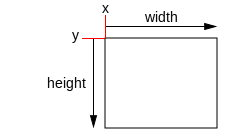
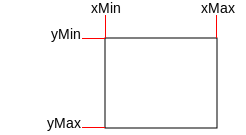
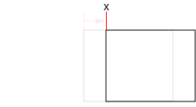
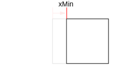

Description 描述
A 2D Rectangle defined by X and Y position, width and height.
Unity uses a number of 2D coordinate spaces, most of which define X as increasing to the right, and Y increasing upwards.
The one exception is in the GUI and GUILayout classes, where Y increases downwards.
The following examples are illustrated in GUI space, where (0,0) represents the top-left corner and Y increases downwards.
Rectangles can be specified in two different ways. The first is with an x and y position and a width and height:

The other way is with the X and Y coordinates of each of its edges. These are called xMin, xMax, yMin and yMax:

Note that although x and y have the same values as xMin and yMin, they behave differently when you set them. Setting x or y changes the position of the rectangle, but preserves its size:

Setting any of xMin, xMax, yMin and yMax will resize the rectangle, but preserve the position of the opposite edge:

See Also: GUI Scripting Guide, Camera.rect, Camera.pixelRect.
Static Properties
| zero | Shorthand for writing new Rect(0,0,0,0). |
Properties 属性
| center | The position of the center of the rectangle. | ||
| height | The height of the rectangle, measured from the Y position. | ||
| max | The position of the maximum corner of the rectangle. | ||
| min | The position of the minimum corner of the rectangle. | ||
| position | The X and Y position of the rectangle. | ||
| size | The width and height of the rectangle. | ||
| width | The width of the rectangle, measured from the X position. | ||
| x | The X coordinate of the rectangle. | ||
| xMax | The maximum X coordinate of the rectangle. | ||
| xMin | The minimum X coordinate of the rectangle. | ||
| y | The Y coordinate of the rectangle. | ||
| yMax | The maximum Y coordinate of the rectangle. | ||
| yMin | The minimum Y coordinate of the rectangle. |
Constructors
| Rect | Creates a new rectangle. |
Public Methods 公共方法
| Contains | Returns true if the x and y components of point is a point inside this rectangle. If allowInverse is present and true, the width and height of the Rect are allowed to take negative values (ie, the min value is greater than the max), and the test will still work. | ||
| Overlaps | Returns true if the other rectangle overlaps this one. If allowInverse is present and true, the widths and heights of the Rects are allowed to take negative values (ie, the min value is greater than the max), and the test will still work. | ||
| Set | Set components of an existing Rect. | ||
| ToString | Returns a nicely formatted string for this Rect. |
Static Methods 静态方法
| MinMaxRect | Creates a rectangle from min/max coordinate values. | ||
| NormalizedToPoint | Returns a point inside a rectangle, given normalized coordinates. | ||
| PointToNormalized | Returns the normalized coordinates cooresponding the the point. |
Operators 运算符
| operator == | Returns true if the rectangles are the same. |